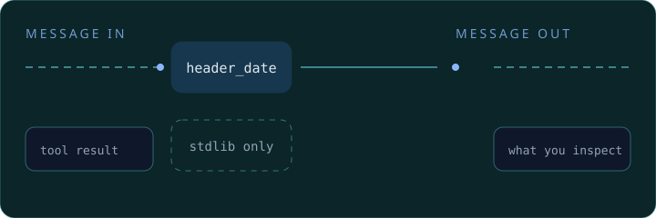

Install
consolepip install header-date
Use
pythonfrom header_date import InvalidHTTPDate, format, now, parse, to_timestamp
parse("Sun, 06 Nov 1994 08:49:37 GMT") # aware datetime in UTC
parse("Mon, 06 Nov 1994 08:49:37 GMT", strict=False) # accept the wrong weekday
format(moment) # 'Sun, 06 Nov 1994 08:49:37 GMT'
now() # the current time, canonical form
to_timestamp("Thu, 01 Jan 1970 00:00:00 GMT") # 0.0
What is accepted
| form | example |
|---|---|
| IMF-fixdate (RFC 9110) | Sun, 06 Nov 1994 08:49:37 GMT |
| RFC 850 (obsolete) | Sunday, 06-Nov-94 08:49:37 GMT |
| asctime (obsolete) | Sun Nov 6 08:49:37 1994 |
- zones
GMT,UTCand numeric+0000are accepted; anything else is rejected - month and weekday names are matched case-insensitively, and full weekday names work
- a two-digit year maps to the most recent past year with those digits (
94→ 1994,
25 → 2025), as RFC 9110 asks
- impossible dates (
31 Feb,25:00:00) are rejected, not rolled over formatalways writes the canonical IMF-fixdate, converting other zones to UTC
Limits
- Only seconds resolution: HTTP dates have no fractional seconds.
- Leap seconds (
:60) are rejected. formatdoes not support years before 1000 or after 9999.
Development
consolepython -m venv .venv
.venv/bin/pip install -e ".[test]"
.venv/bin/pytest
License
MIT.